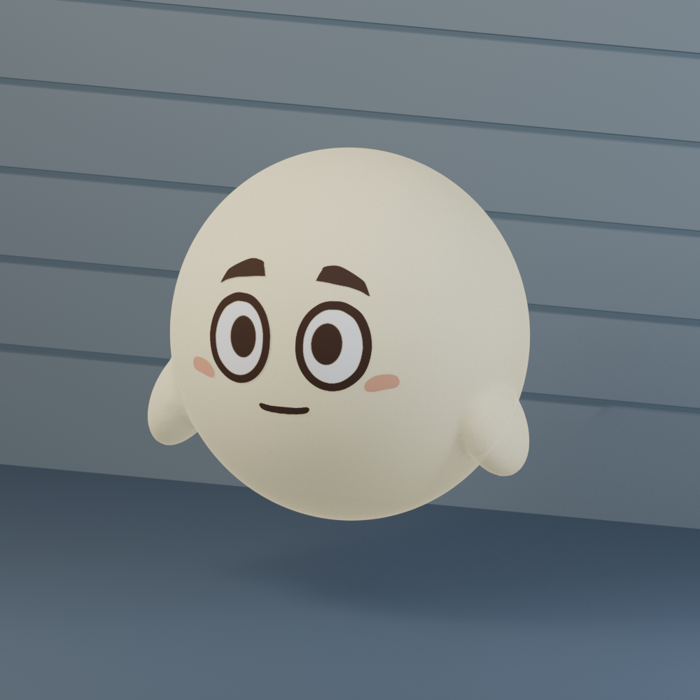
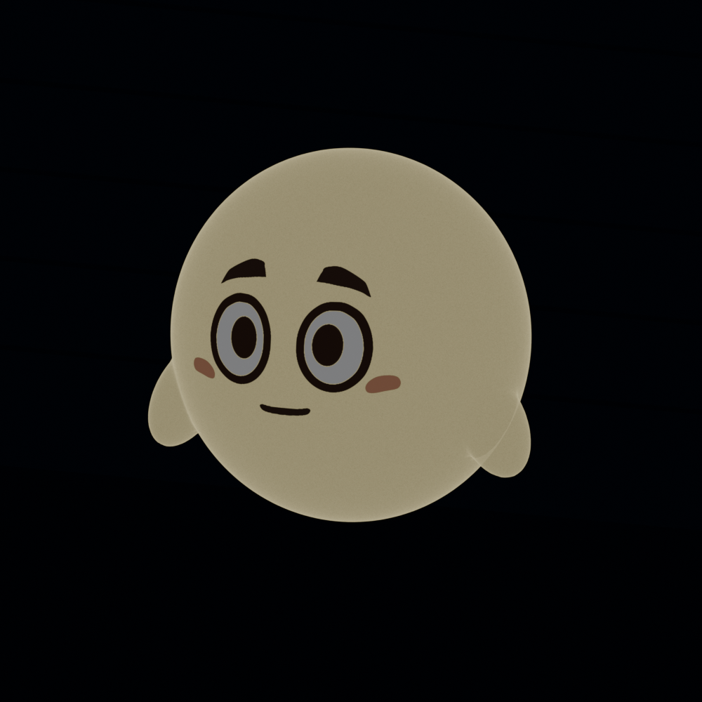
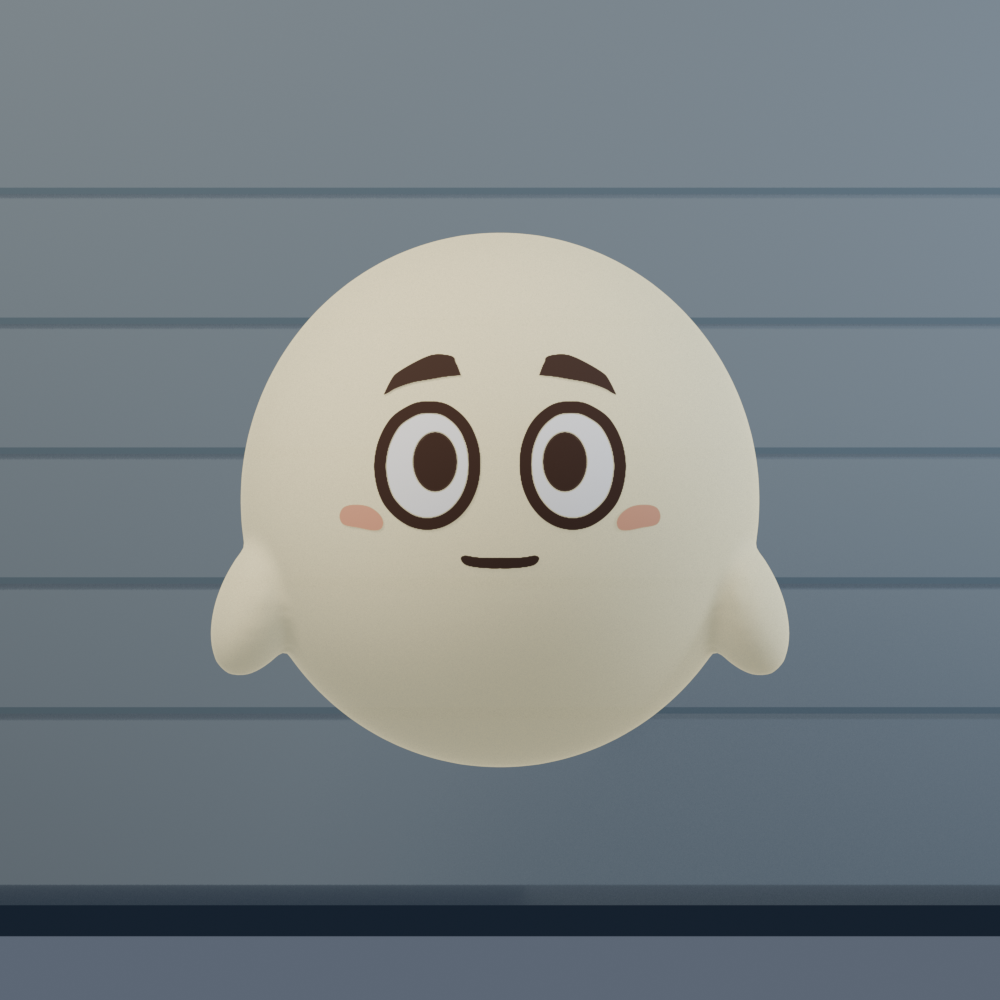
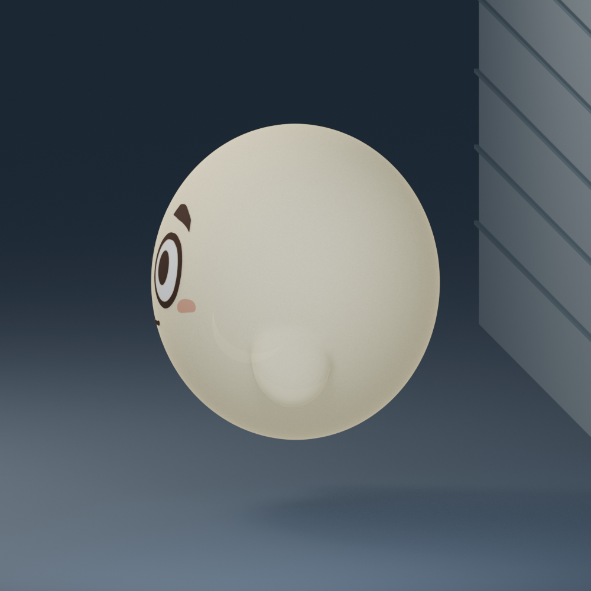

丸いドギド・立体の試作
原画の顔＋ふっくら丸い体。少し透けて、暗所では淡く光る。
Blenderでの見た目確認です。ゲーム内にはまだ入れていません。
v02：向かって右側の顔を基準に、左右の形と中心を調整。体・手・透け具合・発光はそのまま。
v03：左右の手を動かせる骨格を追加。顔は固定、体の浮遊とは別に編集できます。

昼：柔らかいクリーム色
暗所：表情が見える程度の自己発光
正面で顔の左右を確認

横からの厚みを見る

Blenderファイル v03（手の動き付き） · 顔調整 v02 · 調整前 v01 · 試作の内容と操作方法